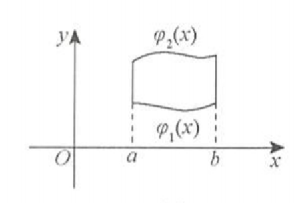
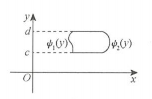
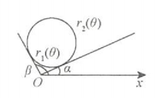
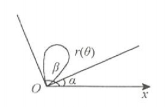
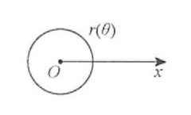
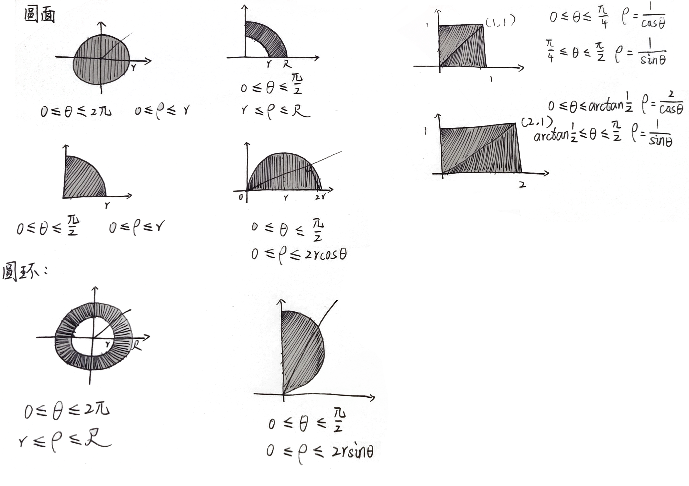

高等数学公式大全（三）
多元函数微分学
章节概括
- 基本概念
- 平面点集的基本概念
- 极限
- 连续
- 偏导数
- 可微
- 偏导数的连续性
- 多元函数微分法则
- 链式求导规则
- 隐函数存在定理（公式法）
- 多元函数的极值与最值
- 概念
- 无条件极值
- 隐函数
- 显函数
- 条件极值与拉格朗日乘数法
- 闭区间边界上的最值
- 闭区域上的最值
极限
设二元函数$ f(P) = f(x,y) $的定义域为D，$ P_0(x_0,y_0) $是D的聚点
如果存在常数A，对于任意给定的正数$ \epsilon $，总存在正数$ \delta $，使得当点$ P(x,y) \in D \cap U^{\circ}(P_0,\delta ) $时，都有$ |f(x,y) - A| < \epsilon $成立
那么就称常数A为函数$ f(x,y) $当$ (x,y) \rightarrow (x_0,y_0) $的极限，记作
连续
如果
则称$ f(x,y) $在点$ (x_0,y_0) $处连续
偏导数
设函数$ z = f(x,y)在点(x_0,y_0) $的某领域内有定义。若极限
存在，则称此极限为函数$ z = f(x,y)在点(x_0,y_0) $处对x的偏导数，记作
于是
如果函数$ z = f(x,y) $在区域D内的偏导数$ f^\prime_x(x,y),f^\prime_y(x,y) $仍具有偏导数，则它们的偏导数称为函数$ z = f(x,y) $的二阶偏导数，按照对变量求导次序的不同，有如下四个二阶偏导数
其中$ f^”{xy}(x,y)，f^”{yx}(x,y) $称为混合偏导数
同样可得三阶、四阶以及n阶偏导数，二阶及二阶以上的偏导数统称为高阶偏导数
可微
如果函数$ z = f(x,y) $在点$ (x,y) $的全增量$ \Delta z = f(x+\Delta x , y + \Delta y) - f(x,y) $
可表示为
其中$ \rho = \sqrt{(\Delta x)^2 + \Delta y)^2} $，A，B不依赖于$ \Delta x , \Delta y $而仅与x,y有关
则称函数$ z = f(x,y) $在点$ (x,y) $可微，而称$ A\Delta x+B\Delta y $为函数$ z = f(x,y) $在点$ (x,y) $的全微分，记作$ dz $，即
判断函数$ z = f(x,y) $在点$ (x,y) $是否可微，步骤如下：
- 写出全增量$ \Delta z = f(x+\Delta x , y + \Delta y) - f(x,y) $
- 写出线性增量$ A\Delta x+B\Delta y $，其中$ A = f^\prime_x(x_0,y_0),B = f^\prime_y(x_0,y_0) $
- 作极限如下，若该极限等于0，则$ z = f(x,y) $在点$ (x_0,y_0) $可微，否则就不可微
偏导数的连续性
对于函数$ z = f(x,y) $，讨论其在某特殊点$ (x_0,y_0) $（比如二元分段函数的分段点）处偏导数是否连续，步骤为
- 用定义法求$ f^\prime_x(x_0,y_0),f^\prime_y(x_0,y_0) $
- 用公式法求$ f^\prime_x(x,y),f^\prime_y(x,y) $
- 计算$ \lim{x \rightarrow x_0,y \rightarrow y_0}f^\prime_x(x,y),\lim{x \rightarrow x_0,y \rightarrow y_0}f^\prime_y(x,y) $
看$ \lim{x \rightarrow x_0,y \rightarrow y_0}f^\prime_x(x,y) = f^\prime_x(x_0,y_0),\lim{x \rightarrow x_0,y \rightarrow y_0}f^\prime_y(x,y)=f^\prime_y(x_0,y_0) $是否成立，则$ z = f(x,y) $在点$ (x_0,y_0) $处的偏导数是连续的
链式求导法则
复合函数的中间变量均为一元函数的情形：
设$ z = f(u,v),u = \alpha (x),v = \beta(x) $，则$ z = f[\alpha(x),\beta(x)] $，且
复合函数的中间变量均为多元函数的情形：
设$ z = f(u,v),u = \alpha (x,y),v = \beta(x,y) $，则$ z = f[\alpha(x,y),\beta(x,y)] $，且
复合函数的中间变量既有一元函数，又有多元函数的情形：
设$ z = f(u,v),u = \alpha (x,y),v = \beta(y) $，则$ z = f[\alpha(x,y),\beta(y)] $，且
隐函数存在定理（公式法）
设函数$ F(x,y,z) $在点$ P(x_0,y_0,z_0) $的某一领域内具有连续偏导数，且$ F(x,y,z) = 0,F_z^\prime(x_0,y_0,z_0) = 0 $
则方程$ F(x,y,z) = 0 $在点$ (x_0,y_0,z_0) $的某一领域内能唯一确定一个连续且具有连续偏导数的函数$ z = f(x,y) $，它满足条件$ z_0 = f(x_0,y_0) $，并有
多元函数的无条件极值
二元函数取极值的必要条件（类比一元函数）
设$ z = f(x,y) $在点$ (x_0,y_0) $一阶偏导数存在并取极值，则$ f_x^\prime(x_0,y_0) = 0,f_y^\prime(x_0,y_0) = 0 $
二元函数取极值的充分条件
记$ f{xx}^”(x_0,y_0) = A，f{xy}^”(x0,y_0) = B，f{yy}^”(x_0,y_0) = C $
则$ \Delta = AC - B^2$，若$ \Delta > 0$取极值（A<0取极大值，A>0取极小值）
$ \Delta > 0 $不取极值，$ \Delta = 0 $方法失效
条件极值与拉格朗日乘数法
求目标函数$ u = f(x,y,z) $在条件$ \alpha(x,y,z) = 0,\beta(x,y,z) = 0 $下的最值，则
- 构造辅助函数$ F(x,y,z,\lambda,\mu) = f(x,y,z) +\lambda \alpha(x,y,z) +\mu \beta(x,y,z) $
- 令
- 解上述方程组得备选点$ Pi,i = 1,2,3,\cdots,n $，并求$ f(P_i) $，取其最大值为$ u{max} $，最小值为$ u_{min} $
- 根据实际问题，必存在最值，所得即为所求
二重积分
章节概括
- 概念、性质与对称性
- 几何背景
- 性质
- 对称性
- 普通对称性
- 轮换对称性
- 计算
- 直角坐标系
- 极坐标系
- 极坐标系与直角坐标系选择的一般原则
- 极直互化
- 积分次序
- 用二重积分处理一元积分的问题
几何背景
曲顶柱体的体积
性质
求区域面积
可积函数必有界
当f(x,y)在有界闭区域D上可积时，f(x,y)在D上必有界
积分的线性性质
积分的可加性
设$ f(x,y) $在有界闭区域D上可积，且$ D_1 \cup D_2 = D，D_1 \cap D_2 = \oslash $，则
积分的保号性
当$ f(x,y),g(x,y) $在有界闭区域D上可积时，若在D上
则有
特殊的，有
估值定理
设M,m分别是$ f(x,y) $在有界闭区域D上的最大值和最小值，A为D的面积，则有
中值定理
设函数$ f(x,y) $在有界闭区域D上连续，A为D的面积，则在D上至少存在一点$ (\xi,\eta) $，使得
普通对称性
轮换对称性
若把x与y对调，区域D不变（或区域D关于$ y = x $对称），则
直角坐标系下的计算法
X型区域，$ \varphi_1(x) \le y \le \varphi_2(x) , a \le x \le b$：

Y型区域，$ \varphi_1(y) \le x \le \varphi_2(y) , c \le y \le d$：

这里的下限都必须小于或等于上限
极坐标系下的计算法
极点O在区域D外部

极点O在区域D边界上

极点O在区域D内部

极坐标系与直角坐标系的一般原则
- 看被积函数是否为$ f(x^2+y^2),f(\frac{y}{x}),f(\frac{x}{y}) $等形式
- 看积分区域是否为圆或者圆的一部分
如果两者兼是，那么优先选用极坐标系
以上只是一般原则，为大方向，实际情况实际分析
极坐标系与直角坐标系的相互转换

常微分方程
章节概括
- 微分方程的概念（用概念做题）
- 微分方程
- 常微分方程
- 微分方程的阶
- 微分方程的解
- 微分方程的通解
- 初始条件与特解
- 一阶微分方程的求解
- 变量可分离型
- 可化为变量可分离型
- 一阶线性微分方程
- 伯努利方程
- 二阶可降阶微分方程的求解
- $ y^” = f(x,y^\prime) $型
- $ y^” = f(y,y^\prime) $型
- 高阶线性微分方程的求解
- 概念
- 解的结构（以二阶为例）
- 二阶常系数齐次线性微分方程的的通解
- 二阶常系数非齐次线性微分方程的的特解
- n阶常系数齐次线性微分方程的解
概念
微分方程
表示未知函数及其导数（或者微分）与自变量之间关系的方程称为微分方程
常微分方程
未知函数是一元函数的微分方程称为常微分方程
如：$ y^{“\prime} - y^” + y = 0 $
微分方程的阶
方程中未知函数的最高阶导数的阶数称为微分方程的阶
如：$ y^{“\prime} - y^” + y = 0 $就是三阶微分方程
微分方程的通解
若微分方程的解中含有的独立常数的个数等于微分方程的阶数，则该解称为微分方程的通解
初始条件与特解
确定通解中的常数的条件就是初始条件，确定了通解中的常数后，解就成了特解
一阶微分方程的求解
变量可分离型
可化为变量可分离型
变量替换法
一阶齐次线性微分方程
一阶非齐次线性微分方程
伯努利方程
形如$ y^\prime + p(x)y = q(x)y^n(n\neq 0,1) $的方程，其中$p(x),q(x)$为已知的连续函数，其解法具体步骤为
- 先变形为$ y^{-n} \cdot y^\prime + p(x)y^{1-n} = q(x)$
- 令$ z=y^{1-n}$，得$ \frac{dz}{dx} = (1-n)y^{-n}\frac{dy}{dx} $，则$ \frac{1}{1-n} \cdot \frac{dz}{dx} + p(x)z = q(x) $
- 解此一阶线性微分方程即可
高阶微分方程
概念
- 方程$ y^” + p(x)y^\prime + q(x)y = f(x) $称为二阶变系数线性微分方程，其中$ p(x),q(x) $叫系数函数，f(x)叫自由项，均为已知的连续函数
- 当$ f(x) = 0 $时，$ y^” + p(x)y^\prime + q(x)y = 0 $为齐次方程
- 当f(x)不恒等于0时，$ y^” + p(x)y^\prime + q(x)y = f(x) $为非齐次方程
- 方程$ y^” + py^\prime + qy = f(x) $称为二阶常系数线性微分方程，其中$ p,q $为常数，$ f(x) $叫自由项，为连续函数
- 当$ f(x) = 0 $时，$ y^” + py^\prime + qy = 0 $为齐次方程
- 当f(x)不恒等于0时，$ y^” + py^\prime + qy = f(x) $为非齐次方程
二阶可降阶微分方程的求解
$y^{\prime\prime} = f(x,y^{\prime})$的方程
方程中不显含未知函数y
- 令$ y^\prime = p(x)，y^” = p^\prime $，则原方程变为一阶方程$ \frac{dp}{dx} = f(x,p) $
- 若求得通解为$ p = \varphi(x,C_1) $即$ y^\prime = \varphi(x,C_1) $，则原方程的通解为$ y = \int \varphi(x,C_1)dx + C_2 $
$y^{\prime\prime} = f(y,y^{\prime})$的方程
方程中不显含未知函数x
- 令$ y^\prime = p，y^” = \frac{dp}{dx} \cdot p $，则原方程变为一阶方程$ p\frac{dp}{dx} = f(x,p) $
- 若求得通解为$ p = \varphi(x,C_1) $，则由$ p = \frac{dy}{dx} $可得$ \frac{dy}{dx} = \varphi(y,C_1) $，分离变量得$ \frac{1}{\varphi(y,C_1)}dy = dx $
- 两边积分得$ \int \frac{1}{\varphi(y,C_1)}dy = x+C_2 $，即可求得原方程的通解
微分算子法
目的为算非齐次微分方程的特解
解的结构（以二阶为例）
若$y_1(x)$和$y_2(x)$是$ y^” + p(x)y’ + q(x)y = 0 $的两个解，且$ \frac{y_1(x)}{y_2(x)}\neq C $(常数)，则称$ y_1(x),y_2(x) $也是该方程的两个线性无关的解，且
是方程$ y^” + p(x)y’ + q(x)y = 0 $的通解
若$ y(x) = C_1y_1(x) + C_2y_2(x) $是$ y^” + p(x)y’ + q(x)y = 0 $的通解，$ y^*(x) $是$ y^” + p(x)y’ + q(x)y = f(x) $的一个特解，则
是$ y^” + p(x)y’ + q(x)y = f(x) $的通解
若$ y_1^{}(x) $是$ y^” + p(x)y’ + q(x)y = f_1(x) $的解，$ y_2^{}(x) $是$ y^” + p(x)y’ + q(x)y = f_2(x) $的解，则
是$ y^” + p(x)y’ + q(x)y = f_1(x)+f_2(x) $的通解
二阶常系数齐次线性微分方程的通解
对于$ y^” + py^\prime + qy = 0 $，其对应的特征方程为$ r^2 + pr + q = 0 $，求其特征根，有以下三种情况（其中$C_1,C_2$为任意常数）：
- 若$ p^2 - 4q > 0 $，设$ r_1,r_2 $是特征方程的两个不等实根，即$ r_1 \neq r_2 $，可得其通解为
- 若$ p^2 - 4q = 0 $，设$ r_1,r_2 $是特征方程的两个相等的实根，即二重根，令$ r_1 = r_2 = r $，可得其通解为
- 若$ p^2 - 4q < 0 $，设$ \alpha \pm \beta i $是特征方程的一对共轭复根，可得其通解为
二阶常系数非齐次线性微分方程的特解
对于$ y^” + py^\prime + qy = f(x) $
设$ P_n(x),P_m(x) $分别为x的n次、m次多项式
- 当自由项$ f(x) = P_n(x)e^{ax} $时，特解要设为$ y^* = e^{ax}Q_n(x)x^k $，其中
- $ e^{ax} $照抄
- $ Q_n(x) $为x的n次多项式
- k = 0时，a不是特征根；k = 1时，a是单特征根；k = 2时，a是二重特征根
- 当自由项$ f(x) = e^{ax}[P_m(x)cos\beta x + P_n(x)sin\beta x] $时，特解要设为$ y^* = e^{ax}[Q_l^{(1)}(x)cos\beta x + Q_l^{(2)}(x)sin\beta x]x^k $，其中
- $ e^{ax} $照抄
- $ l = max{m,n},Q_l^{(1)},Q_l^{(2)}(x) $分别为x的两个不同的$l$次多项式
- k = 0时，$ a \pm \beta i $不是特征根；k = 1时，$ a \pm \beta i $是单特征根
n阶常系数齐次线性微分方程的解
方程$ y^{(n)} + p1y^{(n-1)} + \cdots + p{(n-1)}y^\prime + p_n y= 0 $称为n阶常系数齐次线性微分方程
其中$ p1,p_2,\cdots,p_n $为常数，其对应的特征方程为$ r^{n} + p_1r^{(n-1)} + \cdots + p{(n-1)}r + p_n = 0 $，求特征根
- 特征根为单实根r时，微分方程通解中对应一项$ Ce^{rx} $
- 特征根为k重实根r时，微分方程通解中对应k项$ (C_1 + C_2x +\cdots + C_kx^{k-1})e^{rx} $
- 特征根为单复根$ a \pm \beta i(\beta > 0) $时，微分方程通解中对应两项$ e^{ax}(C_1cos\beta x + C_2sin\beta x) $
- 特征根为k重复根$ a \pm \beta i(\beta > 0) $时，微分方程通解中对应$2k$项$ e^{ax}[(C_1 + C_2x + \cdots + C_kx^{k-1})cos\beta x + (D_1 + D_2x + \cdots + D_kx^{k-1})sin\beta x)] $
本博客所有文章除特别声明外，均采用 CC BY-SA 4.0 协议 ，转载请注明出处！